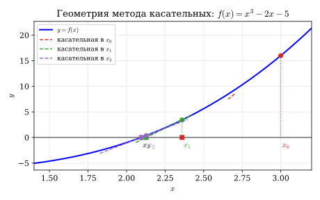
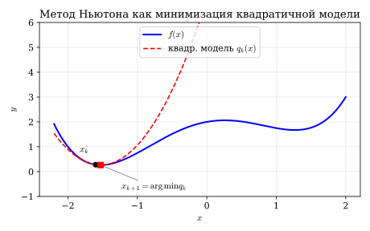
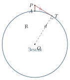
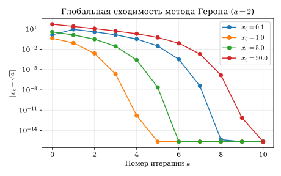
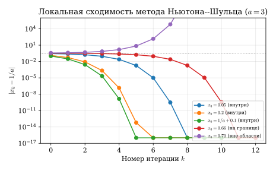

Метод Ньютона
Касательная вместо уравнения
Задачи отыскания корня уравнения f(x)=0 и поиска минимума функции g(x) относятся к разным «жанрам» школьной математики, однако численно они решаются почти одним и тем же приёмом — итерационной схемой, придуманной Исааком Ньютоном.
В работе De analysi per aequationes numero terminorum infinitas (1669) и затем в Method of Fluxions (рукопись 1671 г., издание 1736 г.) Ньютон предложил способ приближённого решения уравнений, который позже Джозеф Рафсон в 1690 г. переписал в современной рекуррентной форме. Поэтому в англоязычной литературе метод часто называют Newton–Raphson.
Существенный вклад в строгое исследование метода внёс советский математик Леонид Витальевич Канторович (1912–1986), лауреат Нобелевской премии по экономике 1975 г. (за теорию оптимального распределения ресурсов). В 1948 г. он опубликовал теорему, носящую теперь его имя: она впервые дала универсальные достаточные условия сходимости метода Ньютона, причём не только для уравнений с одной переменной, но и для уравнений в бесконечномерных банаховых пространствах.
Геометрическая идея. Пусть требуется найти корень уравнения f(x)=0, и нам известна точка x_k, близкая к корню. Заменим график y=f(x) его касательной в точке (x_k, f(x_k)). Касательная — это прямая, и её пересечение с осью x найти просто. Точку этого пересечения и объявим следующим приближением x_{k+1}. Затем повторим. Так получается метод касательных (рис. 2.1).

Уравнение касательной к графику y=f(x) в точке x_k имеет вид y=f(x_k)+f'(x_k)\,(x-x_k). Полагая y=0 и выражая x, получаем
\tag{2.1} \;x_{k+1}=x_k-\dfrac{f(x_k)}{f'(x_k)}\;\qquad k=0,1,2,\dots
Это и есть итерационная формула Ньютона. Точка x_0 выбирается исследователем; от её выбора может зависеть, сойдётся ли метод вообще.
Ньютон для оптимизации
Пусть теперь нужно найти минимум функции g. В любой точке минимума x^{\star} выполнено g'(x^{\star})=0. Значит, минимизация дифференцируемой функции — это решение уравнения
g'(x)=0.
Применим к нему формулу (2.1) с f=g' (и тогда f'=g''):
\tag{2.2} \;x_{k+1}=x_k-\dfrac{g'(x_k)}{g''(x_k)}\;
Эту же формулу можно получить иначе — и это ценная для всей теории оптимизации точка зрения. Разложим g в окрестности x_k в ряд Тейлора:
\tag{2.3} g(x)\;=\;g(x_k)\;+\;g'(x_k)(x-x_k)\;+\;\tfrac12 g''(x_k)(x-x_k)^2 \;+\;o\!\bigl((x-x_k)^2\bigr).
Откуда берётся такое разложение? Идея проста: рядом с точкой x_k функция g ведёт себя «почти как многочлен». Линейное приближение g(x_k)+g'(x_k)(x-x_k) — это уже знакомая нам касательная к графику. Если мы хотим добиться большей точности, надо учесть и кривизну графика — а она как раз кодируется второй производной g''. Так возникает квадратичный многочлен в (2.3).
Отбросим бесконечно малое слагаемое и обозначим оставшийся квадратичный многочлен через
q_k(x)\;=\;g(x_k)+g'(x_k)(x-x_k)+\tfrac12 g''(x_k)(x-x_k)^2.
Минимизировать q_k умеет любой школьник: это квадратное уравнение, решаемое в одну строку. Условие q_k'(x)=0 даёт g'(x_k)+g''(x_k)(x-x_k)=0, откуда x=x_k-g'(x_k)/g''(x_k), что в точности совпадает с формулой (2.2).

Квадратный корень за пять шагов
Пусть a>0. Вычислим \sqrt{a}, применяя метод Ньютона к уравнению
f(x)=x^{2}-a=0.
Тогда f'(x)=2x, и формула (2.1) принимает вид
\tag{2.4} \;x_{k+1}=\dfrac12\!\left(x_k+\dfrac{a}{x_k}\right)\;
Это — знаменитый метод Герона, или вавилонский метод квадратного корня.
Формулу (2.4) в явном виде описал Герон Александрийский (I век н. э.) в трактате «Метрика». Однако эту итерацию умели применять задолго до него: на вавилонской глиняной табличке YBC 7289 (примерно XVIII–XVI вв. до н. э.) сохранилось вычисление \sqrt{2} с точностью до шестого десятичного знака — именно с помощью среднего арифметического и среднего гармонического, что эквивалентно (2.4). Получается, что одна из итерационных схем «пережила» три с половиной тысячи лет и по сей день используется в библиотеках вычисления корня.
Сходимость через сжимающее отображение
Запишем (2.4) как x_{k+1}=T(x_k), где T(x)=\tfrac12(x+a/x). Точка \sqrt{a} — неподвижная для T: T(\sqrt{a})=\sqrt{a}.
Для любого x_0>0 последовательность (2.4) монотонно убывает (начиная с k=1) и сходится к \sqrt{a}. Более того, для ошибки e_k=x_k-\sqrt{a} выполнено
\tag{2.5} e_{k+1}\;=\;\dfrac{e_k^2}{2x_k}\,, \qquad \text{и при }k\geq 1\colon\quad 0\le e_{k+1}\le \dfrac{e_k^{2}}{2\sqrt{a}}.
Доказательство. Шаг 1 (нижняя оценка). По неравенству о средних (AM–GM) для x_0>0: x_1=\tfrac12(x_0+a/x_0)\geq \sqrt{x_0\cdot a/x_0}=\sqrt{a}. Значит, начиная с x_1, все члены лежат в [\sqrt{a},\infty).
Шаг 2 (рекуррентность для ошибки).
e_{k+1}=x_{k+1}-\sqrt{a}=\dfrac{x_k+a/x_k}{2}-\sqrt{a} =\dfrac{x_k^{2}-2\sqrt{a}\,x_k+a}{2x_k}=\dfrac{(x_k-\sqrt{a})^2}{2x_k}=\dfrac{e_k^{2}}{2x_k}.
При x_k\geq\sqrt{a} имеем \tfrac{1}{2x_k}\leq\tfrac{1}{2\sqrt{a}}, откуда вторая часть (2.5).
Шаг 3 (сжатие). Производная T'(x)=\tfrac12(1-a/x^{2}). На луче x\geq\sqrt{a} выполнено T'(x)\in[0,\tfrac12). Значит, T — сжимающее отображение (с константой \tfrac12) на [\sqrt{a},\infty). По теореме Банаха о неподвижной точке последовательность x_k=T^{k}(x_1) сходится к единственной неподвижной точке \sqrt{a}.\square
Из (2.5) видно, что после первой итерации ошибка квадрируется: каждые два десятичных знака удваиваются за один шаг. Поэтому при разумном x_0 хватает 4–5 итераций, чтобы получить машинную точность.
Стоящий человек ростом h=1{,}70 м смотрит на море. До какой точки далеко он видит? Из теоремы Пифагора (рис. 2.3) для прямой, касательной к поверхности Земли:
d^{2}+R^{2}=(R+h)^{2},\qquad d=\sqrt{2Rh+h^{2}}\;\approx\;\sqrt{2Rh}.
При R=6371 км, h=1{,}7\cdot 10^{-3} км:
2Rh\;\approx\;2\cdot 6371\cdot 0{,}0017\;=\;21{,}66\;\text{(км$^2$)}.
Применим к этому числу метод Герона со стартом x_0=5:
\begin{array}{l|l} k & x_k \\\hline 0 & 5{,}000\,000 \\ 1 & \tfrac{1}{2}(5+21{,}66/5)=4{,}666\,000 \\ 2 & 4{,}654\,463 \\ 3 & 4{,}654\,460 \end{array}
Получаем d\approx 4{,}65 км — расстояние, которое запоминается любому, кто хоть раз стоял у моря.

Метод Ньютона для оптимизации — классический пример принципа разделяй и властвуй: вместо того чтобы решать сложную задачу минимизации произвольной функции g целиком, мы заменяем её на каждом шаге простой подзадачей — минимизацией параболы q_k. Парабола подбирается так, чтобы локально (в окрестности x_k) имитировать поведение g, и её минимум вычисляется явно.
Деление без деления
Что, если на нашем процессоре нет аппаратного деления, и нужно вычислить 1/a при a>0 (только сложениями и умножениями)? Применим метод Ньютона к уравнению
f(x)=\dfrac{1}{x}-a=0.
Тогда f'(x)=-1/x^{2}, и подстановка в (2.1) даёт
x_{k+1}=x_k-\dfrac{1/x_k-a}{-1/x_k^{2}} =x_k+x_k^{2}\bigl(1/x_k-a\bigr) =x_k\bigl(2-a x_k\bigr).
То есть
\tag{2.6} \;x_{k+1}=x_k\,(2-a x_k)\;
Эта схема замечательна тем, что в ней нет ни одного деления — только сложение и умножение. Поэтому именно она исторически использовалась в первых ЭВМ для реализации операции деления на аппаратном уровне.
Анализ сходимости
Введём «относительную невязку» u_k=1-a x_k. Тогда
u_{k+1}=1-a x_{k+1}=1-a x_k(2-ax_k)=1-2 a x_k+(a x_k)^{2}=(1-a x_k)^{2}=u_k^{2}.
и отсюда
\tag{2.7} u_k=u_0^{\,2^{k}}\quad\Longrightarrow\quad u_k\to 0\;\Leftrightarrow\;|u_0|<1.
Условие |1-a x_0|<1 эквивалентно 0<x_0<2/a. Радиус сходимости метода — интервал \bigl(0,\,2/a\bigr), и он конечен: вне этого интервала (x_0>2/a или x_0<0) итерации расходятся. Это принципиальное отличие от метода Герона, который сходится для любого x_0>0.
Если в (2.6) заменить число x_k на квадратную матрицу X_k, а число a — на матрицу A, получим знаменитую матричную итерацию Ньютона–Шульца: X_{k+1}=X_k(2I-A X_k). Она вычисляет A^{-1} без обращения матриц на каждом шаге — лишь умножениями.
Аналогичные полиномиальные итерации применяются для приближённой ортогонализации матриц. Именно так устроен оптимизатор Muon, появившийся в 2024–2025 гг. и используемый при обучении современных больших языковых моделей: в нём матрица градиента на каждом шаге быстро ортогонализуется несколькими итерациями Ньютона–Шульца — это намного дешевле, чем точное сингулярное разложение.
Численный эксперимент на Python
Запишем универсальную функцию, реализующую метод Ньютона по формуле (2.1), и применим её к двум разобранным примерам. Комментарии в коде даны по-английски (как принято в большинстве библиотек): f, df — сама функция и её производная; x0 — начальное приближение; n_iter — максимальное число итераций; tol — точность остановки; функция возвращает массив xs с историей итераций.
import numpy as np
import matplotlib.pyplot as plt
def newton(f, df, x0, n_iter=20, tol=1e-15):
"""Newton's tangent method.
Parameters
----------
f, df : callables f(x) and f'(x).
x0 : initial guess.
n_iter : maximum number of iterations.
tol : stopping tolerance on |f(x)|.
Returns
-------
Array of iterates, including x0.
"""
xs = [x0]
x = x0
for _ in range(n_iter):
fx = f(x)
if abs(fx) < tol:
break
x = x - fx / df(x)
xs.append(x)
return np.array(xs)
# ---- Example 1. Square root of a ---------------------------------
a = 2.0
xs_sqrt = newton(lambda x: x**2 - a,
lambda x: 2 * x,
x0=50.0) # very poor initial guess
err_sqrt = np.abs(xs_sqrt - np.sqrt(a))
# ---- Example 2. Reciprocal 1/a -----------------------------------
a = 3.0
xs_inv = newton(lambda x: 1.0 / x - a,
lambda x: -1.0 / x**2,
x0=0.20) # inside the convergence radius (0, 2/a)
err_inv = np.abs(xs_inv - 1.0 / a)
# ---- Convergence plot in log scale -------------------------------
plt.semilogy(err_sqrt, 'o-', label=r'sqrt: $|x_k-\sqrt{2}|$')
plt.semilogy(err_inv, 's-', label=r'1/a: $|x_k-1/3|$')
plt.xlabel('iteration $k$'); plt.ylabel('error')
plt.legend(); plt.grid(True); plt.show()Листинг 2.1. Универсальный метод касательных Ньютона и его применение.
Что показывает эксперимент.
На рис. 2.4 приведены кривые сходимости метода Герона для \sqrt{2} при разных стартах x_0\in\{0{,}1;\,1;\,5;\,50\}. Все четыре кривые сходятся к нулю, причём поведение типичное для квадратичной сходимости: после нескольких «согласующих» шагов число верных знаков удваивается за итерацию. Это иллюстрирует глобальную сходимость метода Герона: годится любое начальное приближение из (0,\infty).

Совсем иначе ведёт себя метод Ньютона–Шульца для 1/a при a=3 (рис. 2.5): радиус сходимости равен интервалу (0,\,2/3)\approx(0,\,0{,}667). Стартуя внутри этого интервала, метод сходится квадратично (нижние три кривые); на самой границе (x_0=0{,}66) — сходится, но «впритык»; а уже при x_0=0{,}70 ошибка взрывообразно растёт: |u_k|=|u_0|^{2^{k}}\to\infty в полном согласии с (2.7). Это локальная сходимость.

Когда сходимость сверхлинейна^\star
Сравнение двух примеров наводит на вопрос: когда именно метод Ньютона сходится так быстро, как мы наблюдаем? Ответ даёт следующая теорема, восходящая к Канторовичу.
Говорят, что последовательность \{x_k\} сходится к x^{\star} со сверхлинейной скоростью, если
\lim_{k\to\infty}\dfrac{|x_{k+1}-x^{\star}|}{|x_k-x^{\star}|}=0.
Если же выполнено более сильное условие |x_{k+1}-x^{\star}|\leq M |x_k-x^{\star}|^{2} для некоторой константы M>0, то сходимость называют квадратичной.
Функция g\colon\mathbb{R}\to\mathbb{R} называется сильно выпуклой с константой \mu>0, если g\in C^{2} и g''(x)\geq\mu для всех x. Сильная выпуклость гарантирует существование и единственность точки минимума и, что важно для нас, отделённость второй производной от нуля.
Пусть выполнено хотя бы одно из условий:
(уравнение) f\in C^{2} в окрестности точки x^{\star}, f(x^{\star})=0 и f'(x^{\star})\neq 0;
(сильно выпуклая оптимизация) g\in C^{3}, g — сильно выпуклая на интервале, содержащем точку минимума x^{\star}, и применяется итерация (2.2).
Тогда существуют \delta>0 и M>0 такие, что для всякого x_0\in(x^{\star}-\delta,\,x^{\star}+\delta) итерации Ньютона определены и
\tag{2.8} |x_{k+1}-x^{\star}|\;\leq\;M\,|x_k-x^{\star}|^{2}.
В частности, сходимость квадратичная (а значит, сверхлинейная).
Доказательство. Достаточно доказать случай (а): задача (б) сводится к нему, если положить f=g', тогда условие f'(x^{\star})\neq 0 эквивалентно g''(x^{\star})\geq\mu>0.
Разложим f по формуле Тейлора с остаточным членом в форме Лагранжа в окрестности x_k и подставим x=x^{\star}:
0\;=\;f(x^{\star})\;=\;f(x_k)+f'(x_k)(x^{\star}-x_k)+\tfrac{f''(\xi_k)}{2}(x^{\star}-x_k)^{2},
где \xi_k — некоторая точка между x_k и x^{\star}. Разделим обе части на f'(x_k) (по непрерывности эта величина не равна нулю в малой окрестности x^{\star}):
0\;=\;\dfrac{f(x_k)}{f'(x_k)}+(x^{\star}-x_k)+\dfrac{f''(\xi_k)}{2 f'(x_k)}(x^{\star}-x_k)^{2}.
Из определения x_{k+1}=x_k-f(x_k)/f'(x_k) получаем \frac{f(x_k)}{f'(x_k)}=x_k-x_{k+1}. Подставляя:
0=(x_k-x_{k+1})+(x^{\star}-x_k)+\dfrac{f''(\xi_k)}{2 f'(x_k)}(x^{\star}-x_k)^{2},
откуда после очевидных переобозначений
\tag{2.9} x_{k+1}-x^{\star}\;=\;\dfrac{f''(\xi_k)}{2 f'(x_k)}\,(x_k-x^{\star})^{2}.
Это и есть искомая рекуррентность для расстояния.
Теперь подберём константы. По непрерывности f' и f'' существует \delta_1>0 и числа L, m>0 такие, что |f''(\xi)|\leq L и |f'(x)|\geq m для всех \xi,x\in [x^{\star}-\delta_1,\,x^{\star}+\delta_1]. Положим M=L/(2m) и \delta=\min\!\bigl(\delta_1,\,\tfrac{1}{2M}\bigr). Тогда из (2.9) при |x_k-x^{\star}|<\delta:
|x_{k+1}-x^{\star}|\leq M|x_k-x^{\star}|^{2}\leq M\delta\cdot|x_k-x^{\star}|\leq\tfrac12|x_k-x^{\star}|<\delta.
Значит, последовательность не покидает \delta-окрестность и оценка (2.8) выполнена для всех k.\square
Где условия выполняются для наших примеров?
Метод Герона. Здесь f(x)=x^{2}-a, f'(x)=2x, f''(x)=2. В точке x^{\star}=\sqrt{a}>0 выполнено f'(x^{\star})=2\sqrt{a}\neq 0. Условия теоремы выполняются на всём луче (0,\infty), не содержащем ноль, и константа в (2.8) принимает вид M=\frac{1}{2\sqrt{a}} — в полном согласии с явным выражением (2.5), полученным элементарно.
Метод Ньютона–Шульца. Здесь f(x)=1/x-a, f'(x)=-1/x^{2}, f''(x)=2/x^{3}. В точке x^{\star}=1/a имеем f'(x^{\star})=-a^{2}\neq 0, и теорема применима в малой окрестности этой точки. Однако, в отличие от метода Герона, оценка снизу |f'(x)|\geq m>0 ломается при x\to\infty: производная стремится к нулю. Именно поэтому радиус сходимости в этом примере конечен и равен 1/a слева и справа от x^{\star}, что в сумме даёт интервал (0,\,2/a), найденный нами ранее аналитически.
Итого, два простейших примера полностью укладываются в доказанную теорему: метод Ньютона сходится сверхлинейно там, где производная регулярна и отделена от нуля. Глобальную же сходимость, как у Герона, приходится доказывать дополнительно — например, ссылаясь на структуру функции (выпуклость) и теорему Банаха о сжимающем отображении, как мы и сделали в разделе 2.1.
Применяя метод Ньютона к уравнению f(x)=x^{n}-a=0, получите итерационную формулу для \sqrt[n]{a}. Покажите, что для n=3 она имеет вид x_{k+1}=\frac{2 x_k+a/x_k^{2}}{3}.
Докажите, что для метода Герона из любого x_0>0 погрешность e_1 всегда положительна, после чего последовательность монотонно убывает. (Указание: используйте AM–GM.)
Для метода Ньютона–Шульца при a=2 найдите наибольшее x_0, при котором итерации ещё сходятся. Сравните численно скорость сходимости при x_0=0{,}1 и x_0=0{,}9.
^{\star} Сформулируйте и докажите аналог теоремы 2.5 для метода Ньютона минимизации многомерной сильно выпуклой функции g\colon\mathbb{R}^{n}\to\mathbb{R}. Какую роль играет матрица Гессе \nabla^{2}g?
^{\star} Прочитайте о теореме Канторовича в учебнике «Kantorovich theorem» и сформулируйте её в одну фразу: какие именно три величины должны быть «в нужном соотношении» для гарантии сходимости?
Мы шли по одномерному графику и сводили минимизацию к решению уравнения g'(x)=0. Но функция потерь нейросети живёт не на прямой, а в пространстве миллионов параметров. Там вторую производную уже не поделить в уме: матрица Гессе огромна, а интуиция «парабола касается графика» отказывает. Что вообще видит оптимизатор в таком пространстве — узкий овраг, гладкую чашу или поле сёдел? С этого вопроса начинается следующий сюжет — ландшафт функции потерь и парадоксы высокой размерности.